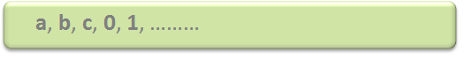
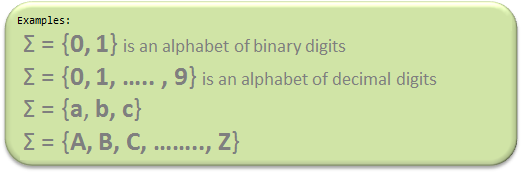
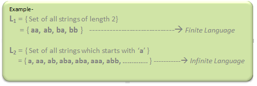

Automata theory (also known as Theory Of Computation) is a theoretical branch of Computer Science and Mathematics, which mainly deals with the logic of computation with respect to simple machines, referred to as automata.
Automata* enables the scientists to understand how machines compute the functions and solve problems. The main motivation behind developing Automata Theory was to develop methods to describe and analyse the dynamic behavior of discrete systems.
Automata is originated from the word “Automaton” which is closely related to “Automation”.
Now, let’s understand the basic terminologies, which are important and frequently used in Theory of Computation.
- Symbol: Symbol is the smallest building block, which can be any alphabet, letter or any picture.
 - Alphabets (Σ): Alphabets are set of symbols, which are always finite.
 - String: String is a finite sequence of symbols from some alphabet. String is generally denoted as w and length of a string is denoted as |w|.
Empty string is the string with zero occurrence of symbols, represented as ε.
Number of Strings (of length 2) that can be generated over the alphabet {a, b} - - - a a a b b a b b Length of String |w| = 2 Number of Strings = 4 Conclusion: For alphabet {a, b} with length n, number of strings can be generated = 2n.Note – If the number of Σ’s is represented by |Σ|, then number of strings of length n, possible over Σ is |Σ|n.
- Language: A language is a set of strings, chosen form some Σ* or we can say- ‘A language is a subset of Σ* ‘. A language which can be formed over ‘ Σ ‘ can be Finite or Infinite.

Powers of ‘ Σ ‘ :
Say Σ = {a,b} then
Σ0 = Set of all strings over Σ of length 0. {ε}
Σ1 = Set of all strings over Σ of length 1. {a, b}
Σ2 = Set of all strings over Σ of length 2. {aa, ab, ba, bb}
i.e. |Σ2|= 4 and Similarly, |Σ3| = 8
Σ* is a Universal Set.
Σ* = Σ0 U Σ1 U Σ2 ..........
= {ε} U {a, b} U {aa, ab, ba, bb}
= ............. //infinite language.
References –
cs.stanford.edu
Wikipedia